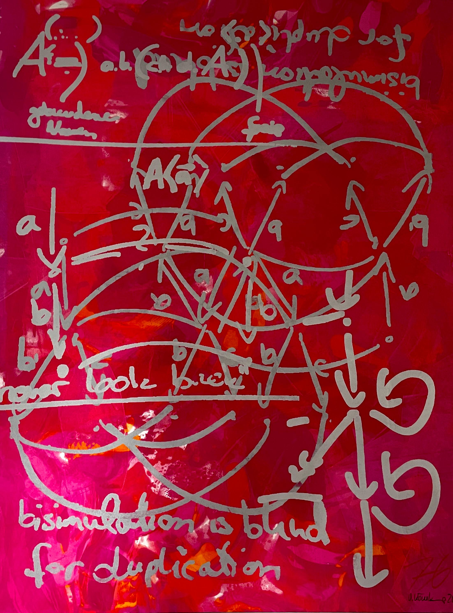
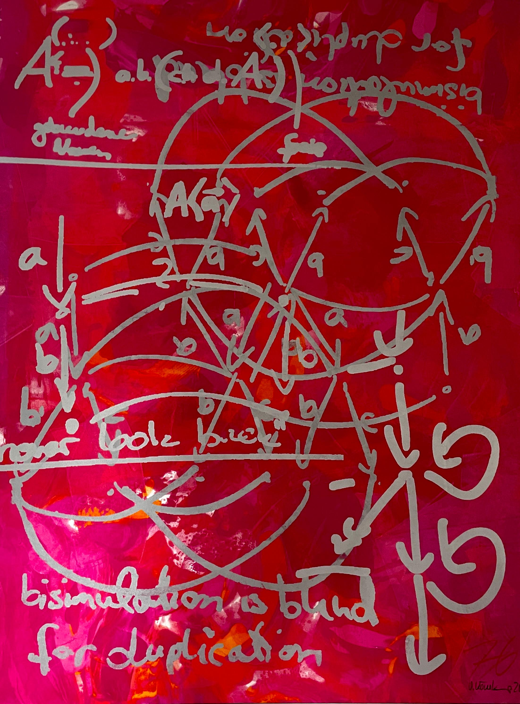
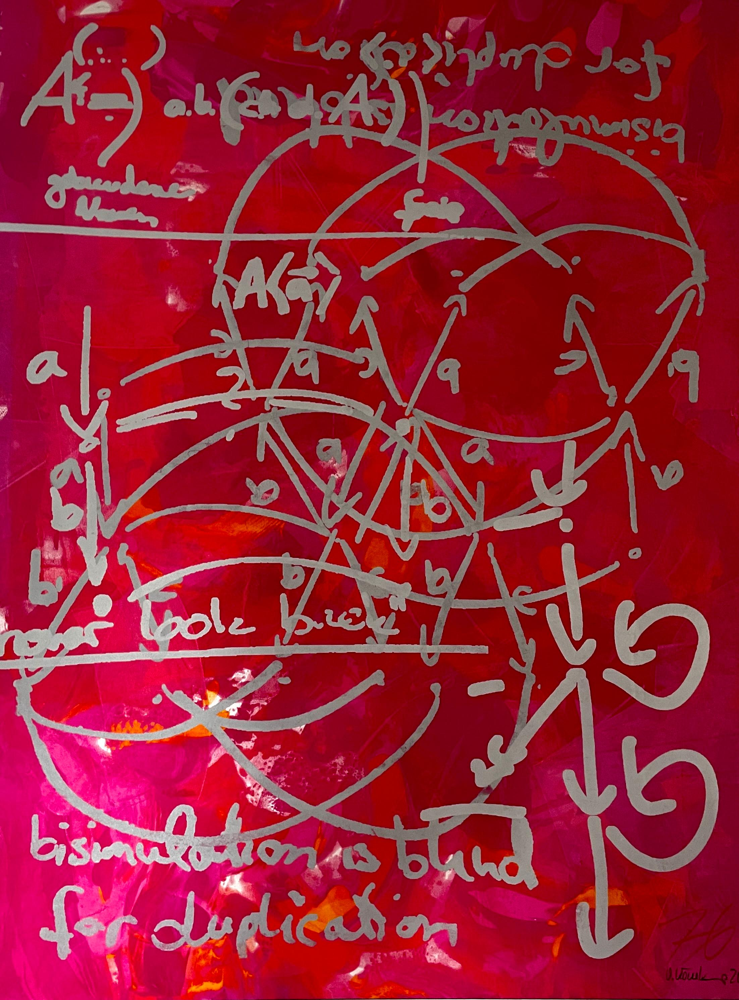

What to do: If you look for study rooms, where you can go with your pals, then MAR is ideal for that. You dont need to regeister for anything and after the tutorials are over the rooms usually are free to use. I used to go there on satturdays and sundays too but the TU opening hour policys change from day to day so you kinda have to see how it is on your own

Next Magic Word: Find the painting above. The full sirname is the password for the next location.
Next location: The Math building
Freitagsrunde: The Freitagsrunde is also an initiative at TU Berlin located in the MAR building. They have created a database filled with many exam questions from various courses. If you’re lucky, you might find your subject here. Since math exams are usually oral after the fourth BA semester, you may have better luck finding old protocols for oral exams at the Math initiative.